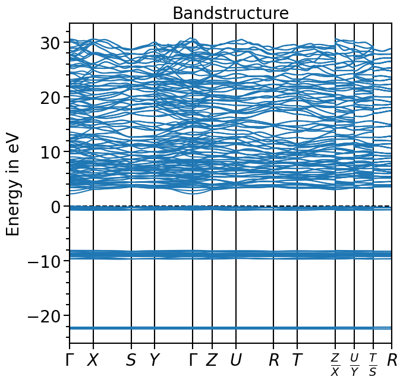
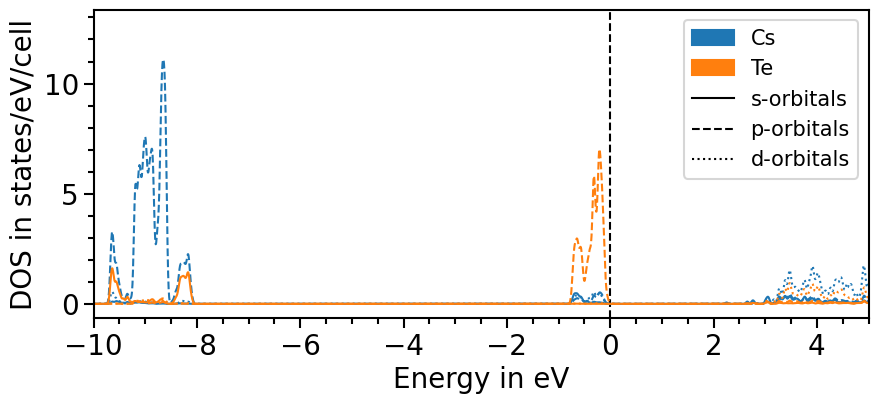
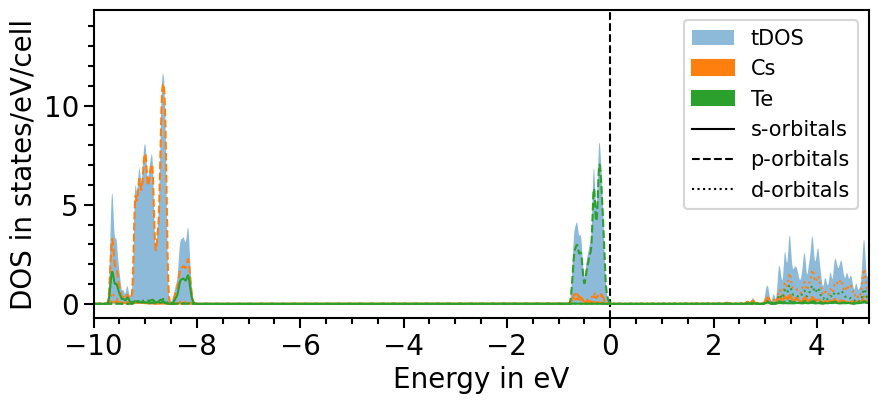
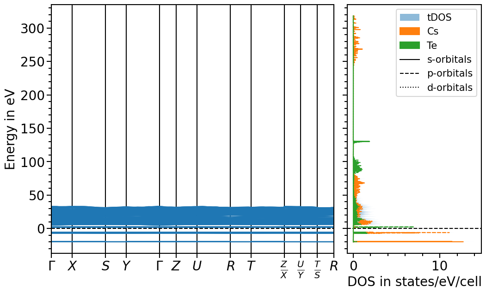
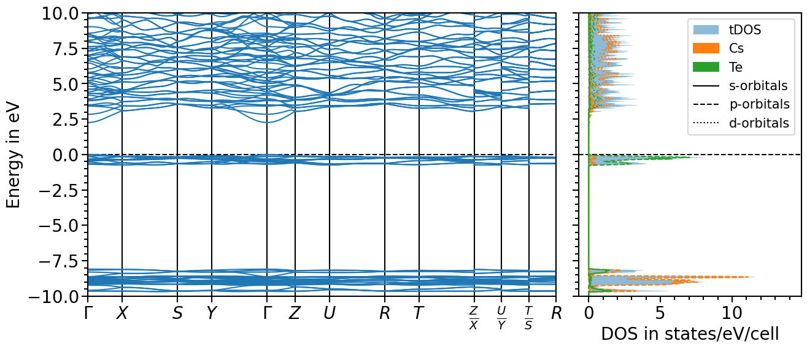

Plotting the band structure and projected density of states (pDOS) from CP2K output-files¶
A more detailed description of the different features is given in the examplePlotting the band structure and projected density of states (pDOS) from Quantum ESPRESSO output-files.
The band structure plot¶
To plot the band structure from the CP2K output the function read_band_structure from the io sub-package can be used to parse the eigenvalues and k-points from the band output file:
[1]:
from aim2dat.io.cp2k import read_band_structure
band_structure = read_band_structure("files/el_bands_cp2k/bands.bs")
The output of the function is a dictionary containing a list of k-points and a nested list of eigenvalues:
[2]:
band_structure.keys()
[2]:
dict_keys(['kpoints', 'unit_y', 'bands', 'occupations', 'path_labels'])
Now the BandStructurePlot class in the plots sub-package is used to visualize the band structure. For non-cubic systems the unit-cell needs to be given as nested list or numpy-array to scale the k-points accordingly using the function set_reference_cell. Additional attributes can be set to show and store the plot:
[3]:
from aim2dat.plots.band_structure_dos import BandStructurePlot
bands_plot = BandStructurePlot()
bands_plot.store_path = "."
bands_plot.store_plot = True
bands_plot.show_plot = True
bands_plot.set_reference_cell(
[
[9.389, 0.000, 0.000],
[0.000, 5.865, 0.000],
[0.000, 0.000, 11.591],
]
)
The band structure can now be loaded into the object and plotted:
[4]:
bands_plot.import_band_structure(
data_label="test_band_structure",
kpoints=band_structure["kpoints"],
occupations=band_structure["occupations"],
path_labels=band_structure["path_labels"],
bands=band_structure["bands"],
unit_y=band_structure["unit_y"],
align_to_vbm=True,
)
[5]:
plot = bands_plot.plot(
"test_band_structure", plot_title="Bandstructure", plot_name="bands_plot.png"
)

The projected density of states plot¶
The procedure to plot the projected density of states is very similar to plotting the band structure. There is a function in the io sub-package to parse the projected density of states from the output-files.
In this case the path to the folder needs to be given. Based on the standard pattern of the file names of CP2K the corresponding files are read and the information is parsed:
[6]:
from aim2dat.io.cp2k import read_atom_proj_density_of_states
pdos = read_atom_proj_density_of_states("files/el_pdos_cp2k/")
print(pdos["pdos"][0].keys())
dict_keys(['kind', 's', 'px', 'py', 'pz', 'd-2', 'd-1', 'd0', 'd+1', 'd+2'])
Next, an object of the DOSPlot class is created and the pojected density of states can be loaded. We shift the pDOS straight-away such that the valence band maximum is at 0 eV with the parameter shift_dos.
The parameters sum_kinds, sum_principal_qn and sum_magnetic_qn sum up over different atoms of the same element, the principal and magnetic quantum numbers, respectively.
As the output of CP2K contains the energies and intensities of single levels it is necessary to apply smearing function to obtain reasonable results. Here, we can apply a Gaussian function whose sigma and delta parameters can be adjusted using the attributes smearing_delta and smearing_sigma.
[7]:
from aim2dat.plots.band_structure_dos import DOSPlot
dos_plot = DOSPlot()
dos_plot.import_projected_dos(
"test_pdos",
pdos["energy"],
pdos["pdos"],
shift_dos=-pdos["e_fermi"],
sum_kinds=True,
sum_principal_qn=True,
sum_magnetic_qn=True,
use_smearing=True,
)
[8]:
dos_plot.show_plot = True
dos_plot.show_legend = True
dos_plot.x_range = (-10, 5)
plot = dos_plot.plot("test_pdos")

The total density of states can be included by setting the attribute sum_pdos to True:
[9]:
dos_plot.sum_pdos = True
plot = dos_plot.plot("test_pdos")

Band structure + projected density of states plot¶
The two previous plots can also be combined in one figure with the BandStructureDOSPlot class:
[10]:
from aim2dat.plots.band_structure_dos import BandStructureDOSPlot
bands_dos_plot = BandStructureDOSPlot()
bands_dos_plot.set_reference_cell(
[
[9.389, 0.000, 0.000],
[0.000, 5.865, 0.000],
[0.000, 0.000, 11.591],
]
)
bands_dos_plot.show_plot = True
bands_dos_plot.sum_pdos = True
bands_dos_plot.import_band_structure(
data_label="test_band_structure_dos",
kpoints=band_structure["kpoints"],
path_labels=band_structure["path_labels"],
occupations=band_structure["occupations"],
bands=band_structure["bands"],
unit_y=band_structure["unit_y"],
)
bands_dos_plot.import_projected_dos(
"test_band_structure_dos",
pdos["energy"],
pdos["pdos"],
sum_kinds=True,
sum_principal_qn=True,
sum_magnetic_qn=True,
use_smearing=True,
)
plot = bands_dos_plot.plot("test_band_structure_dos")

Finally, the range for the x- and y-axis can be adjusted and the valence band maximum is set to 0 eV:
[11]:
bands_dos_plot.ratio = (15, 6)
bands_dos_plot.y_range = (-10, 10)
bands_dos_plot.shift_bands_and_dos_to_vbm("test_band_structure_dos")
plot = bands_dos_plot.plot("test_band_structure_dos")
